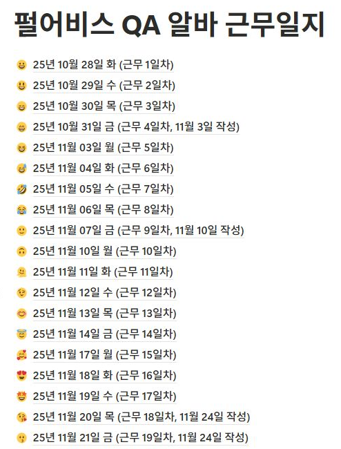
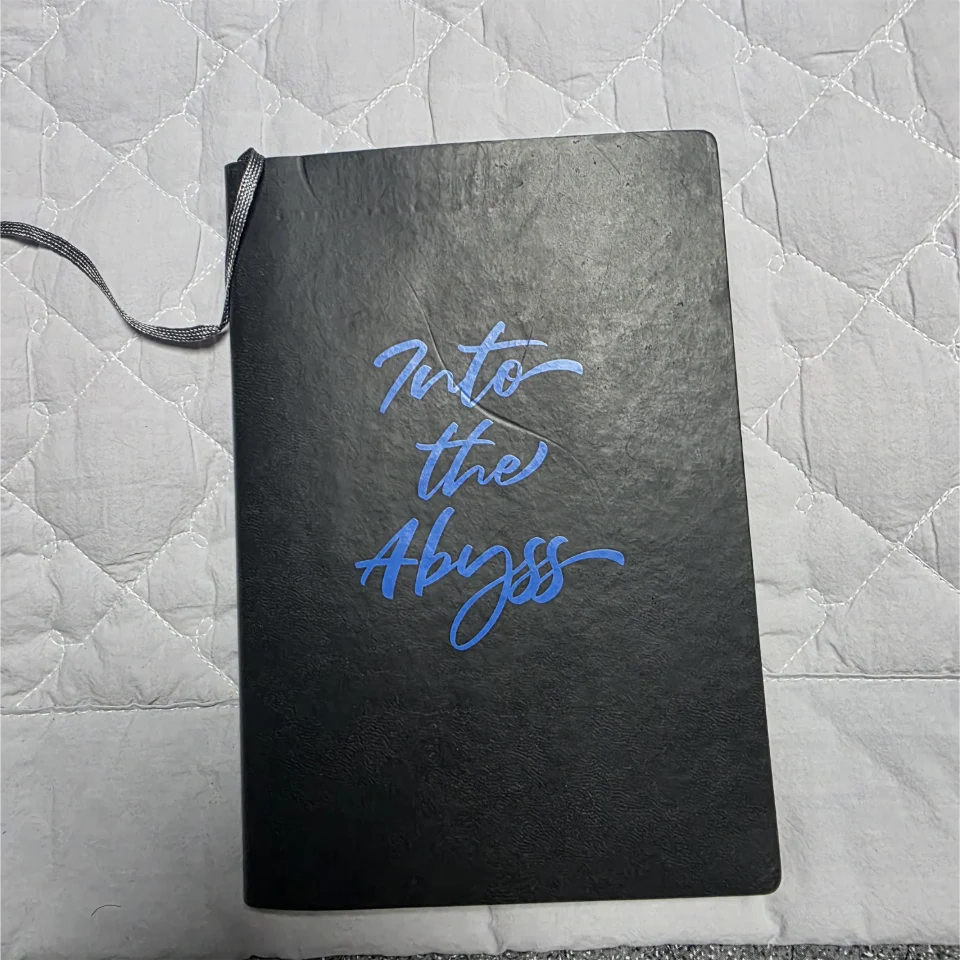

펄어비스 · 붉은사막 QA
펄어비스 · 붉은사막 QA
QA 근무일지
–
게임을 제작하는 현장에서 배운 것을 제 것으로 만들어 게임 제작자로서 성장하고 싶었습니다. 그래서 QA 근무를 하며 챕터를 플레이하고 장면을 녹화한 일부터, 동료와 오류를 재현해 Jira에 보고한 과정까지 일지에 남겼습니다. Perforce로 게임 데이터를 살펴보고, 동료가 같은 오류를 확인할 수 있도록 재현 절차를 함께 다듬으며 개발팀이 일하는 방식을 익혔습니다.
노션 근무일지
전체 53편 중 첫 19편
일지로 보는 업무의 변화
-
캐릭터가 펀치 한 번을 날리는 데 필요한 일
- 챕터를 플레이하고 녹화하면서, 주먹을 뻗는 동작에 모션 캡처와 물리 처리가 어떻게 쓰이는지 들었습니다.
- 주먹이 닿는 순간에 효과음과 상대의 피격 동작, 흙먼지가 함께 맞아야 타격이 자연스럽게 보인다는 걸 배웠습니다.
-
오늘 보이지 않은 오류도 다시 확인하기
- 이미 보고된 오류가 제 플레이에서는 나타나지 않았습니다.
- 간헐적으로 발생할 수 있다는 설명을 듣고, 다음 검수 때 다시 확인할 항목으로 적어 뒀습니다.
-
–
퀘스트 이슈를 직접 등록하고 재현 절차 줄이기
- Jira에 오류를 기록하는 법을 배운 뒤, 검수 중 발견한 이슈를 직접 등록했습니다.
- 같은 조건에서 오류가 반복되는지 여러 차례 확인했습니다.
- 담당자와 함께 불필요한 조작을 하나씩 빼 보고, 같은 현상을 재현할 수 있는 짧은 절차를 Jira에 올렸습니다.
-
버그를 재현하고 게임 데이터 살펴보기
- 플레이 중 발견한 버그를 재현하고 Jira에 보고할 내용을 정리했습니다.
- Perforce에서 게임 데이터를 찾아 XML 파일의 내용을 확인하는 법을 배웠습니다.
-
·
아이템 점검과 시퀀스 더빙 검수
- 1월 8일에는 별도로 요청받은 아이템 점검을 시작했습니다.
- 15일에는 시퀀스의 더빙을 확인할 수 있도록 해당 장면을 녹화했습니다. 초반에 익힌 챕터 녹화 방식을 음성 검수에도 활용했습니다.

수기 근무일지
펄어비스 웰컴 키트로 받은 노트에 일하면서 배운 용어와 새로 익힌 검수 방법을 그때그때 적었습니다. 그렇게 근무 기간 동안 손으로 채운 분량이 최소 100페이지입니다.